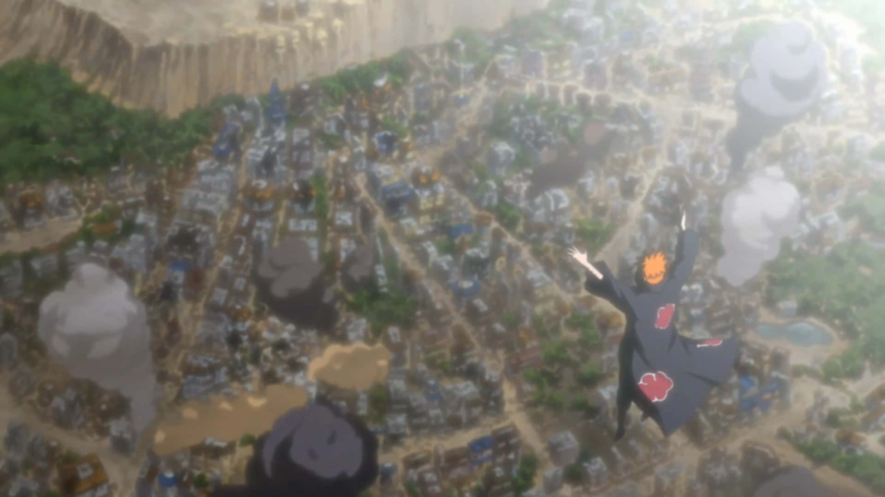
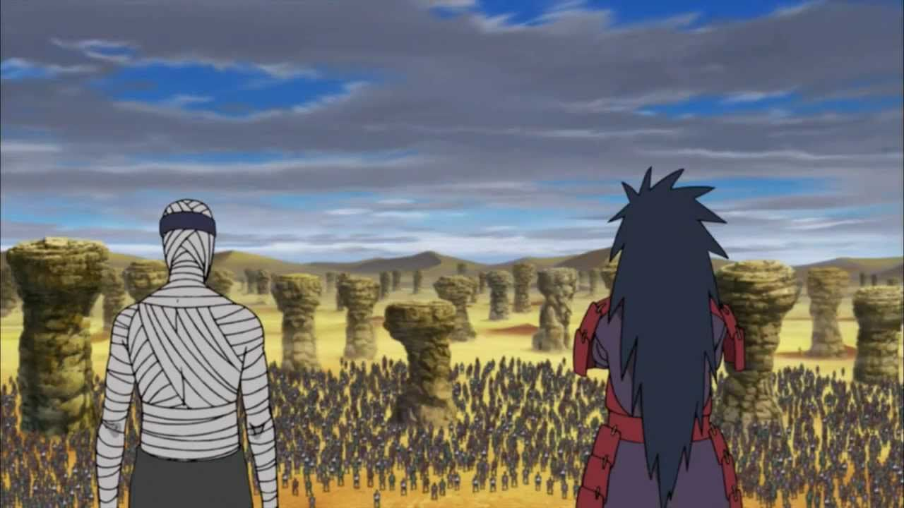
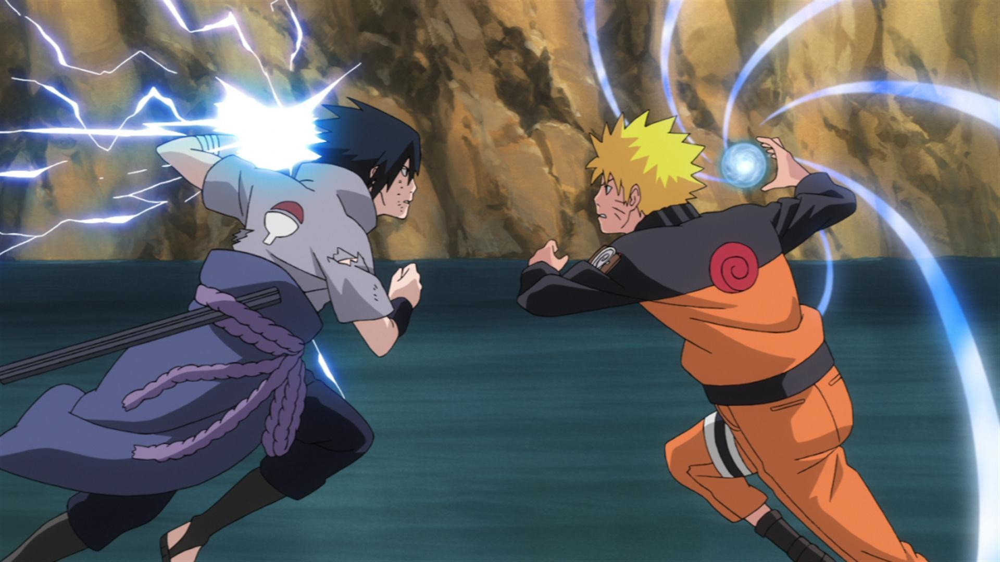

Major Arcs
Pain Arc
One of the most emotional arcs, where Naruto fights Pain to save Konoha. Pain's Assault is an arc from Part II of the Naruto series. It is also known as Two Saviours in the anime. The arc sees Pain's attack on Konohagakure to find Naruto Uzumaki. Pain's Assault is considered by many to be the best arc in the series and one of the best arcs in anime history. It stretches from episodes 152 to 169 and from episodes 172 to 175.
Fourth Great Ninja War
A massive battle between the Shinobi Alliance and Madara Uchiha. The Fourth Great Ninja War in the Naruto series was started by Obito Uchiha and Kabuto Yakushi. It saw all the Five Great Nations join forces for the first time in history against a common threat. The war aimed to protect the Nine-Tails and Eight Tails’ jinchūriki Naruto and Killer Bee from the Akatsuki. The masked Sharingan user Tobi declared war on the Five Great Countries, leading to the establishment of the Shinobi Alliance. Meanwhile, Kabuto Yakushi revived some of the most dangerous dead ninjas, including the legendary Madara Uchiha. Madara Uchiha, one of the strongest warriors in the Uchiha clan, appeared to fight the entire Shinobi alliance alone, shocking and surprising fans. The war begins in episode 262 and ends in episode 474.
The Final Battle: Naruto vs Sasuke
The ultimate showdown between two rivals, Naruto and Sasuke. In the final battle between Sasuke and Naruto, both characters faced off with intense determination. Naruto ultimately won, but both lost their arms during the fight, symbolizing their reconciliation and the end of their rivalry. Sasuke, despite having the opportunity to kill Naruto, chose to show mercy, indicating his growth and the bond they shared. This battle marked a significant turning point in their relationship and the overall narrative of the series.They did recover their arm, though.